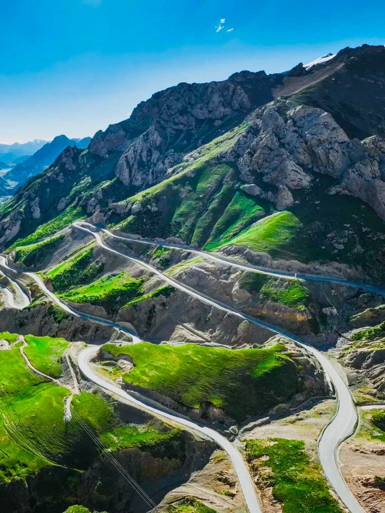
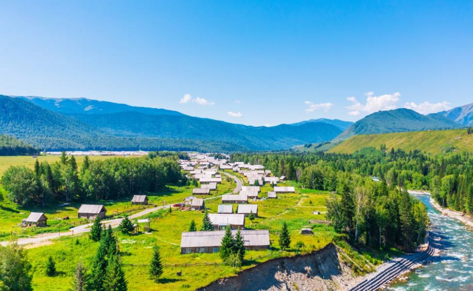
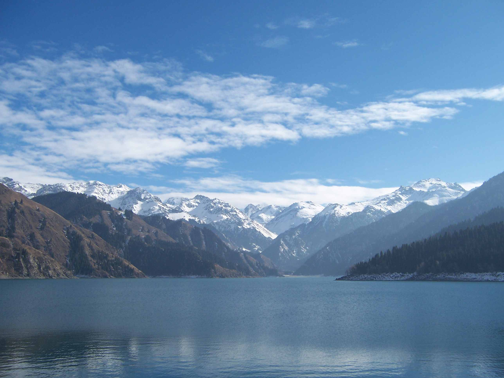

天山垂直鋪錦繡，萬里山河入夢來

從絲路駝鈴，到今日新疆
新疆，不只是中國的六分之一國土，更是一部活著的文明史。
兩千多年前，西漢建元三年，張騤「鑿空西域」，漢武大帝揮鞭西指，中原王朝的目光第一次穩穩落在天山南北。從此，河西走廊向西延伸，絲綢之路在這裡真正打開。
這裡是文明的十字路口。
塔里木盆地周緣，曾並立著三十六國：龜茲、于闐、疏勒、樓蘭、車師、焉耆……它們是絲路的驛站，也是文化的熔爐。
佛教沿蔥嶺北麓東傳，在克孜爾千佛洞、柏孜克里克石窟留下飛天與本生故事；
摩尼教的經卷在吐魯番的風沙中沉眠千年；
景教僧侶的足跡，曾出現在阿力麻里的集市；
後來，伊斯蘭的宣禮聲，又在喀什噶爾的晨曦中響起。
希臘風格的犍陀羅藝術、波斯風格的聯珠紋織錦、中原的漢式雲氣紋銅鏡，在同一座墓葬中相遇——世界少有這樣的層疊。
龜茲的伎樂，曾讓大唐長安為之傾倒，《龜茲樂》列入十部樂；
于闐的畫家，隨玄奘東行，參與了敦煌莫高窟的壁畫創作；
樓蘭的木簡，記錄著中原屯田士卒的日常；
疏勒的市集，駱駝背上馱著羅馬的玻璃、波斯的銀幣、印度的香料。
而中原的治理，從未缺席。
漢設西域都護府於烏壘城，鄭吉「護西域三十六國」；
唐置安西大都護府於龜茲，統轄四鎮，烽燧從焉耆一直排到碎葉；
清乾隆平定準噶爾，設伊犁將軍府，統領天山南北；
左宗棠抬棺入疆，收復失地，「新栽楊柳三千里，引得春風度玉關」。
從漢簡、唐碑到清代滿文奏摺，語言在變，但中央政權對這片土地的治理軌跡，始終連綿不斷。
維吾爾、哈薩克、漢、回、柯爾克孜、蒙古、塔吉克等四十多個民族，在這片土地上放牧、耕種、歌唱。
十二木卡姆的旋律，承載著漠北回鶻的西遷記憶；
阿肯阿依特斯的冬不拉，彈唱著草原民族的自由心聲；
春節的鞭炮與古爾邦節的宰牲，在同一座城市裡交替響起。
今天的新疆，是古絲路的嶄新延續。
高鐵飛馳，取代了昔日駝隊；
阿拉山口的班列，日夜不息地駛向歐洲；
天山雪峰下，城市燈火與草原炊煙交相輝映；
庫車的古城牆旁，是新建的文化廣場；
喀什的老茶館裡，老人喝著磚茶，少年刷著手機。
你看到的每一寸山河，都有兩千年的故事；
你聽到的每一句問候，都是文明交融的迴響。
來新疆，不只是旅行，
是走進一部沒有句號的史書。
天山的眼淚，滴落在人間成了天池

——在博格达峰5445米的雪冠之下，藏着一片海拔1910米的高山圣湖，它是古丝绸之路上西王母"瑶池"的原型。——天山天池。
天山天池，位于新疆昌吉回族自治州阜康市境内，地处东天山博格达峰北坡中山带，湖面海拔1910米。
2013年，作为"新疆天山"的重要组成部分被列入联合国教科文组织世界自然遗产名录。它既是中国西北干旱区最具代表性的高山冰碛堰塞湖，也是西王母神话的东方源头——自然与人文，在这片湖水上完成了罕见的双重叠加。
天山天池不只是高山冰川雕琢出的一汪碧水，更是中原典籍、道教信仰、西域传说与多民族记忆共同叠加的文化圣地。它的"名"，一半来自自然，一半来自三千年不断的书写与信仰。
几百万年前，博格达峰下的冰川像巨大铲子，把山谷磨成深盆，冰川退去后，碎石泥沙堵住谷口，积雪融水灌入，便形成了今天的天池。
它海拔1910米，水深百米，湖水清澈湛蓝，背靠终年积雪的博格达峰，是中亚地区唯一的保存着几亿年完整的地质演变结构的沙漠景區。
天池的文化厚度，几乎与中国有文字记载的文明史等长。
古籍《穆天子传》记载，西周穆王曾西游至此，与西域首领西王母在湖边宴饮对歌，留下千古佳话。
公元1219年，道教全真派掌教长春真人丘处机，应元太祖成吉思汗诏命，率十八弟子从山东出发，不远万里西行。相传他路过天山时，登临瑶池遥望博格达峰，写下《宿轮台东南望阴山》一詩，并亲率弟子在天池西岸台地上修建道观，铁瓦寺由此而来。
清乾隆年间，乌鲁木齐都统明亮为引天池水灌溉阜康农田，立石碑《灵山天池疏凿水渠碑记》，形容天池是"见神池浩淼，如天镜浮空，沃日荡云，洵造物之奥区也"。"天池"之名，正是取自碑记中"天镜"和"神池"两字——因天池在高山之巅，天在池中、池比天高，故而得名。
而在2013年，新疆天山天池风景名胜区被列入联合国教科文组织世界遗产名录。
这意味着，天池不仅是一处自然景观，更作为中华文明多元一体格局的文化见证，获得了国家与世界的双重认定。
一半是瑤池仙境，一半是人間煙火
天山天池景区总面积548平方公里，核心湖面海拔1910米，最深处达103米，从湖面到南侧博格达峰顶的垂直落差超3500米——这样的"高山垂直生态梯度"，在中亚干旱区乃至整个欧亚大陆都极为罕见。
而山坡中心村，刚好坐落在这幅天山长卷的天然画框边缘：走出村口的农家乐木栅栏，正面是如宝石蓝的冰碛湖面；抬眼向东望，便是落差近百米的飞龙瀑，冰融水砸在青石上溅起终年不歇的水雾；再往南眺，博格达峰的雪顶在云杉林梢露着淡蓝的边。
这方水土的珍贵之处，在于它既是活着的边疆多民族聚落，也是叩开天山自然奇观的天然基地。
正因为有天池这块"世界级磁石"在身后，哈萨克、汉、回、维吾尔等多个民族才在此交汇共生——牧民赶着牛羊从山上下来，把毡房里的冬不拉琴声带进了村；回族人把"九碗三行子"的宴席功夫搬进了农家乐的庭院；维吾尔族的烤馕、手抓饭香气，从山坡中心村的街巷一路飘到景区门口。
村子距离景区售票处仅约1公里，依托这份"天池黄金通道"的区位，从上世纪90年代仅靠农耕和外出务工的普通山边村落，蜕变成了如今拥有53家农家乐和民宿、年接待游客超50万人次的全国乡村旅游重点村。
于是你走在村里，能撞见的不只是风景：哈萨克族牧民会邀你进毡房，递上一碗热腾腾的奶茶，听冬不拉拨出草原的长调；民宿主人会翻出箱底的民族服饰，让你换上在庭院与山景间拍张照；入夜后，特色院落里燃起篝火，伴随着琴声，游客和当地村民一起载歌载舞，新疆的夜生活就这样在海拔1900米的山脚下被点燃。
村子里也有清代始建的福寿观（原铁瓦寺），朱红梁柱掩在雪岭云杉林间，是新疆道教文化的重要锚点；有陈列着第四纪冰川标本、博格达峰岩画复制品的天池地质博物馆，系统讲述这片土地的地质演变与丝路多民族共居史，是探湖前最佳的知识铺垫；村旁的瑶池天街则把西王母神话拆成了玉虚宫、蟠桃园等沉浸式街区，每晚上演的《瑶池幻境》水幕秀，把千年的传说变成了可触摸的夜游体验。
舌尖上的交融更直白——大盘鸡的土豆吸饱了汤汁，手抓羊肉清水炖煮保留原汁原味，九碗三行子按回族宴席的老规矩摆成三行九碗，烤包子的皮脆得掉渣，配上一壶茯茶，雪山脚下的胃就这样被多民族的手艺轮流抚慰。
天山天池周圍旅游地點推薦
天山天池之所以能成为北疆的灵魂，全赖百万年前的冰川“啃”出了这个深达百米的高山湖泊，又在湖畔养出了茂密的雪岭云杉。有了这汪“天山之眼”和这片林海，才有了山下炊烟袅袅的村落和代代相传的故事。想读懂这片山水，不妨从这几个地方开始：
1.🚢 天池游船｜湖心近距离拥抱博格达峰
从天池码头登船，是公认欣赏天山天池的最佳方式之一。游船贴着水面滑行，直接驶入博格达峰的倒影范围——这座海拔5445米的雪峰是天池的标志性背景，晴天湖面如镜时，雪顶、云杉、蓝天会完整地"跌"进水里；夏季冰雪融水丰沛，湖水呈现出独特的蒂芙尼蓝，是其他高山湖泊无法复制的近距離体验。
2.🌲 定海神针｜湖畔的千年古榆
沿环湖木栈道漫步，第一眼撞见的往往就是"定海神针"——天池北岸一株临水而立的百年古榆，相传是西王母玉簪所化，镇守着这一池碧水。古榆配雪山反影，是天池最经典的机位，无需任何构图技巧，手机直出都像明信片。
3.🥾 潜龙渊步道｜远古堰塞湖的森林秘境
从区间车终点到湖边有一条木栈道，穿行在天山原始雪岭云杉林中。沿途溪流相伴、瀑布飞泻，潭水清冽幽深，是远古堰塞湖的活化石景观。夏季凉风习习，秋季层林尽染，老人小孩都能轻松走完，是避开主湖人流的"森林氧吧"。
4⛩️ 西王母祖庙（福寿观）｜瑶池仙境的信仰锚点
位于天池东岸山腰，依山而建，红墙金顶配雪山，是新疆道教文化的重要锚点。这里相传是西王母宴请周穆王、举办蟠桃盛会之地，庙前平台能俯瞰部分湖面风光。徒步单程约25分钟，体力不够也可乘观光车，是感受"瑶池"文化重量的最佳落脚点。
5.🚡 马牙山索道｜3056米上的U型全景
换乘观光车再登上索道，8分钟直达海拔3056米的马牙山顶——这是天山天池"上帝视角"的唯一答案。360度环视下，翡翠色湖面像U型丝带嵌在群山间，博格达峰的雪顶在云杉林梢露着淡蓝的边，云海出现概率极高。不用徒步就能拿下全景区顶级机位，是"开车登顶、把天池装进口袋"的独一份体验。
6.🌊 飞龙潭（东小天池）｜悬泉瑶虹的瀑布奇景
从主湖向东望，便是落差近百米的飞龙瀑，冰融水砸在青石上溅起终年不歇的水雾，潭水呈翡翠色。6月水量充沛时，水雾中常现彩虹，是"悬泉瑶虹"一景的诞生地。这里游人较少，可以慢慢欣赏峡谷间的清凉。
7.🏘️ 山坡中心村｜天池门户的多民族烟火
距离景区售票处仅约1公里的山坡中心村，是天池脚下"活着的北疆村落"。正因为有天池这块世界级磁石在身后，哈萨克、汉、回、维吾尔等多个民族才在此交汇共生——牧民赶着牛羊从山上下来，把毡房里的冬不拉琴声带进了村；回族人把"九碗三行子"的宴席功夫搬进了农家乐庭院；维吾尔族的烤馕、手抓饭香气，从村口一路飘到景区大门。
走在村里，哈萨克族牧民会邀你进毡房，递上一碗热腾腾的奶茶，听冬不拉拨出草原长调；民宿主人会翻出箱底的民族服饰让你换上拍照；入夜后，特色院落里燃起篝火，游客和村民一起载歌载舞。村子从上世纪90年代仅靠农耕和外出务工的普通山边村落，蜕变成了集吃、住、行、游、购、娱为一体的全国乡村旅游重点村，有50余家农家乐和民宿，是"日游天池、夜宿山坡"的最佳据点。
8.🏛️ 瑶池天街｜西王母神话的沉浸式夜游
位于阜康市区的瑶池天街，把"瑶池"神话拆成了玉虚宫、蟠桃园等沉浸式街区。每晚上演的水幕秀《瑶池幻境》，把千年的传说变成了可触摸的夜游体验；街区里特色商铺、非遗工坊、文创市集、特色餐饮一应俱全，凭天池景区票根还可免费观演。从山坡中心村的农家乐出来，来这里逛夜市撸两串红柳烤肉，刚好补齐"天池一日"的夜生活拼图。
9.♨️ 五江温泉城｜雪山下的"冰火两重天"
紧邻景区售票处的五江温泉城，是天池脚下富硒温泉的代表。零下20℃的冬夜泡进暖汤，抬头看博格达峰雪景与星空——这种"冰火两重天"的体验，是天池冬季旅游最奢侈的收尾。室内恒温水上乐园、汗蒸、玻璃栈道一应俱全，住宿常含温泉票，是深度游旅客的热门选择。
天山天池相關資訊
Tips:
當地平均海拔高，全年平均氣溫較低，且多突發雲雨天氣。需自備风薄外套或轻型冲锋衣、防曬衣物裝備及用品、雨傘或雨衣、防滑平底鞋。
景区实行实名预约制，建议提前1天通过微信小程序"寻梦天山 做客天池"或公众号"玩转天山天池""天池零距离"预约购票。
裝備建議：即使夏季，山頂氣溫僅10℃左右，需攜帶防風防水外套；徒步建議穿防滑運動鞋
索道、游船等项目受天气影响可能临时调整，出发前建议拨打景区官方客服：400-8706-110，确认当日开放状态。
- 📍 地址
- 🚃 交通
- 🕙 營業時間
- 門票與休息日
新疆维吾尔自治区昌吉回族自治州阜康市准噶尔路501号（景区游客中心）；距乌鲁木齐约70公里，车程1.5小时。
自驾：乌鲁木齐沿吐乌大高速至阜康出口，再行驶约30公里抵达游客中心，全程约1.5小时，景区停车场10元/天，私家车不可驶入核心湖区。
直通车：乌鲁木齐高铁站/机场/人民公园等地发车，往返60-80元，一站直达景区游客中心。
公共交通：乌鲁木齐北郊客运站乘大巴至阜康市（约15元），再换乘天池专线小巴（约10元）抵达；全程约2.5-3小时。
景区内部：必须购买往返区间车（60元/人），盘山30余公里串联核心景点。
夏秋季（4月16日-9月30日）：08:00-19:00。
冬春季（10月1日-次年4月15日）：09:30-17:00。
门票+往返区间车：夏秋季155元/人（门票95元+区间车60元）；冬春季105元/人（门票45元+区间车60元）。
优惠政策：1.3米以下儿童、65周岁以上老人免大门票；全日制学生、60-64周岁老人门票半价；2026年全年生日当天凭身份证免门票；一票两日有效。
可选自费：马牙山索道往返220元、环湖游船100元、电瓶车单程10元。